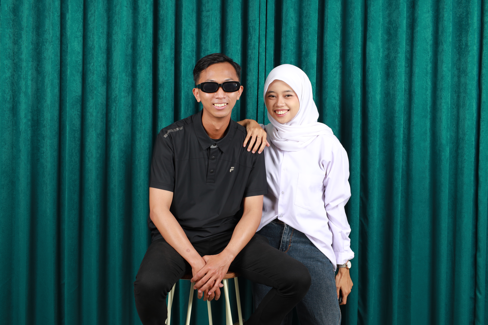
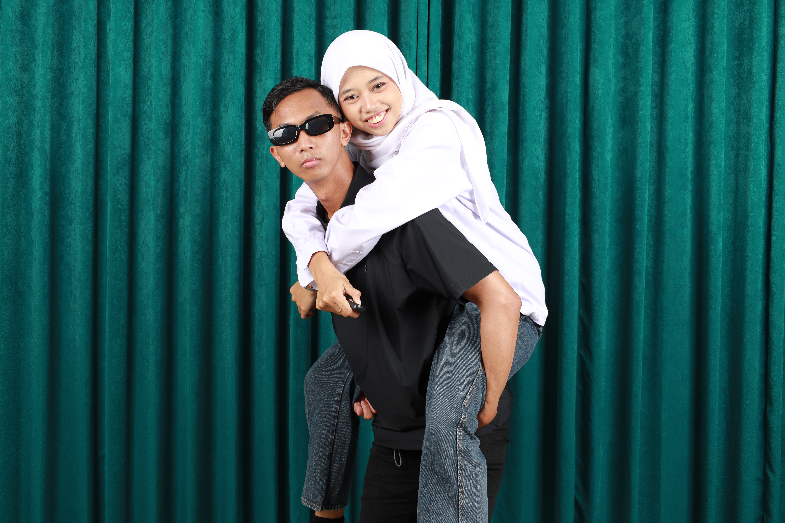
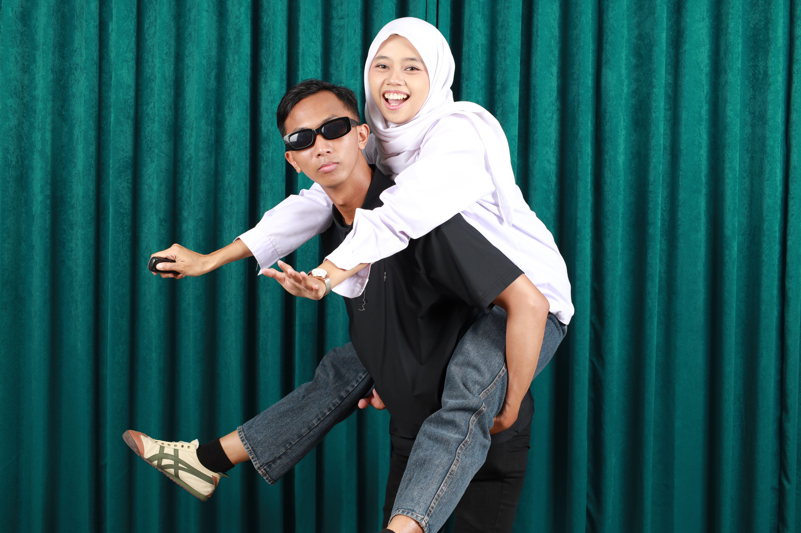

Hari ini terasa lebih istimewa karena ada kamu. Rafi menyiapkan sesuatu yang sederhana, tetapi penuh rasa sayang. Yuk, buka kejutan kecil ini.
✧ ✿ ✧
with love, Rafi
A DAY AS LOVELY AS YOU
Happy Birthday!
Untuk Ayy tersayang ♡
Selamat ulang tahun, seseorang yang begitu berarti. Semoga usia baru ini membawa lebih banyak kebahagiaan, kesehatan, ketenangan, dan kesempatan untuk mewujudkan hal-hal yang kamu impikan. Terima kasih telah hadir dan menjadikan banyak hari Rafi terasa lebih indah.
— ✧ —
FRAGMENTS OF HAPPINESS
Our Moments
Beberapa momen mungkin terlihat sederhana, tetapi selalu punya tempat istimewa dalam ingatan. Di sini, Rafi ingin menyimpan enam potongan cerita kita.

♡Foto 1
a day to remember

✿Foto 2
my favorite smile

♡Foto 3
a little happiness
✧Foto 4
side by side
❀Foto 5
the little details
♡Foto 6
and many more
THE STORY WE KEEP
Our little story
Cerita kita tidak harus selalu sempurna. Cukup tentang dua orang yang bersedia mendengarkan, memahami, dan terus bertumbuh bersama.
Awal yang sederhana
Dari hal-hal sederhana, kita mulai mengenal satu sama lain. Tanpa banyak disadari, percakapan kecil itu tumbuh menjadi sesuatu yang berarti.
Banyak hal untuk disyukuri
Ada tawa yang ingin diulang, cerita yang ingin dikenang, dan pelajaran yang membuat kita semakin dewasa.
Semoga terus bersama
Semoga ke depannya kita tetap punya ruang untuk saling memilih, saling mendukung, dan menjadi versi terbaik dari diri masing-masing.
SOME WORDS FROM MY HEART
Dear Ayy,
Terima kasih sudah hadir dan menjadi bagian dari perjalanan hidup Rafi. Rafi tahu, tidak ada manusia yang sempurna. Namun, Rafi ingin terus belajar menjadi seseorang yang lebih baik—yang bisa mendengarkan, memahami, dan membuatmu merasa dihargai.
Di usia yang baru ini, semoga hal-hal baik semakin dekat. Semoga setiap langkahmu dimudahkan, hatimu selalu dikuatkan, dan satu per satu impianmu menemukan jalan untuk menjadi nyata.
Jika suatu hari terasa berat, semoga kita tidak lupa bahwa kita bisa saling menguatkan. Rafi ingin terus mengenalmu, mendukung setiap langkahmu, dan mengumpulkan lebih banyak kenangan baik bersamamu.
Selamat ulang tahun, Sayang. Jangan pernah meragukan betapa berharganya dirimu.
With love, Rafi ♡
♡
A WISH FOR YOUR NEW CHAPTER
For your new chapter
Semoga kamu selalu diberi umur yang berkah, tubuh yang sehat, hati yang tenang, rezeki yang baik, serta keberanian untuk mengejar semua cita-cita. Semoga orang-orang tulus selalu ada di sekelilingmu, dan semoga tahun ini menyimpan banyak alasan baru untuk bahagia.